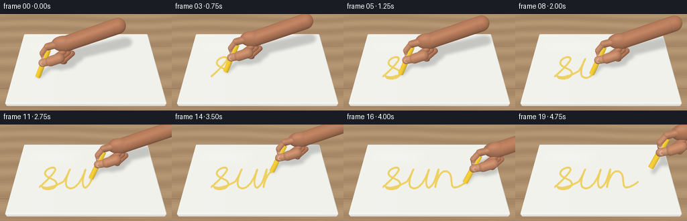
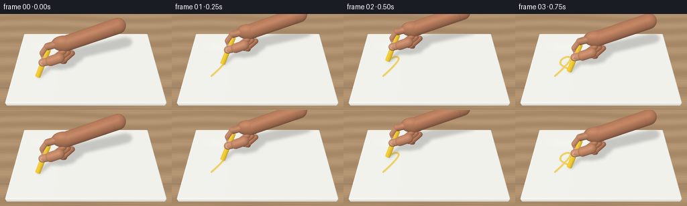

CODING AGENTS AS PIXEL WORLD MODELS
traex/GPT-6.1-Sol · mechanics_0043
点击播放 · 原生 RGB 像素
逐轮保存的候选
回放视频、检查图与代码变化。
每份候选均可单独播放。实际图片检查记录在下方工具轨迹中。
候选 01播放与检查图
点击播放 · 原生 RGB 像素


展开代码变化
--- 上一保存版本
+++ 本次保存版本
@@ -0,0 +1,311 @@
+"""Procedural RGB animation: soft-lit porcelain, powdery chalk and a writing hand.
+No assets, models or rendering packages are used. All geometry is analytic.
+"""
+from pathlib import Path
+import json
+import numpy as np
+from PIL import Image, ImageDraw, ImageFilter
+import artifact_io
+
+ROOT = Path(__file__).resolve().parent
+SPEC = json.loads((ROOT / 'task_spec.json').read_text())
+W,H = SPEC['width'],SPEC['height']
+SS=3
+RW,RH=W*SS,H*SS
+rng=np.random.default_rng(43)
+CAM=np.array([0.,-6.4,8.2]); TARGET=np.array([0.,.2,0.])
+F=(TARGET-CAM); F/=np.linalg.norm(F)
+R=np.cross(F,[0,0,1.]);R/=np.linalg.norm(R)
+U=np.cross(R,F)
+FOCAL=300.
+LIGHT=np.array([-3.,-4.,8.]);LIGHT/=np.linalg.norm(LIGHT)
+
+def normalize(a):
+ return a/np.maximum(np.linalg.norm(a,axis=-1,keepdims=True),1e-10)
+
+def project(p):
+ p=np.asarray(p);v=p-CAM
+ z=v@F
+ return np.stack([W/2+FOCAL*(v@R)/z,H/2-FOCAL*(v@U)/z],axis=-1)
+
+xx,yy=np.meshgrid((np.arange(RW)+.5)/SS,(np.arange(RH)+.5)/SS)
+D=normalize(F+(xx[...,None]-W/2)/FOCAL*R-(yy[...,None]-H/2)/FOCAL*U).reshape(-1,3)
+O=np.broadcast_to(CAM,D.shape)
+NPIX=len(D)
+
+# A rounded porcelain slab; its small rolled edge distinguishes it from paper.
+BOX_CENTER=np.array([0.,0.,-.02]); HALF=np.array([3.60,2.25,.14]); BR=.075
+
+def board_sdf(p):
+ q=np.abs(p-BOX_CENTER)-(HALF-BR)
+ return np.linalg.norm(np.maximum(q,0),axis=-1)+np.minimum(np.max(q,axis=-1),0)-BR
+
+t0=((BOX_CENTER-HALF)-O)/D;t1=((BOX_CENTER+HALF)-O)/D
+near=np.max(np.minimum(t0,t1),axis=-1);far=np.min(np.maximum(t0,t1),axis=-1)
+valid=(far>near)&(far>0)
+t=np.maximum(near,0)
+for _ in range(22):
+ p=O+t[:,None]*D
+ dist=board_sdf(p)
+ t+=np.where(valid,np.maximum(dist,0),0)
+p=O+t[:,None]*D
+valid &= (np.abs(board_sdf(p))<.0015)&(t<far+.002)
+q=np.abs(p-BOX_CENTER)-(HALF-BR)
+n=normalize(np.maximum(q,0)*np.sign(p-BOX_CENTER))
+# Warm oak underneath the unframed, white porcelain board.
+table_t=(-.18-CAM[2])/D[:,2];tablep=O+table_t[:,None]*D
+wx,wy=tablep[:,0],tablep[:,1]
+grain=np.sin(wy*71+1.8*np.sin(wx*.9)+.9*np.sin(wy*5+wx*.3))
+grain+=.35*np.sin(wy*189+3*np.sin(wx*.7))
+broad=np.sin(wy*6+np.sin(wx*.5))
+wood=np.stack([174+6*grain+8*broad,143+5*grain+8*broad,109+3*grain+7*broad],axis=-1)
+seams=np.exp(-((np.mod(wy+1.3,2.8)-.018)/.018)**2)
+wood-=seams[:,None]*np.array([20,18,14])
+wood+=rng.normal(0,.6,wood.shape)
+wood=np.asarray(Image.fromarray(np.uint8(np.clip(wood.reshape(RH,RW,3),0,255))).filter(ImageFilter.GaussianBlur(.6)),dtype=float).reshape(-1,3)
+ndotl=np.maximum(n@LIGHT,0)
+base=np.array([249.,249.,244.])
+porcelain=base[None,:]*(.82+.18*ndotl[:,None])
+# An extremely faint broad window glint, not a rough or fibrous surface.
+ref=normalize(2*(n@LIGHT)[:,None]*n-LIGHT)
+sp=np.maximum(np.sum(ref*(-D),axis=-1),0)**60
+porcelain+=sp[:,None]*6
+porcelain+=np.exp(-((p[:,0]+1.8)/1.3)**4-((p[:,1]-1.2)/.35)**4)[:,None]*2.1
+porcelain-=np.clip((p[:,0]+3.6)/7.2,0,1)[:,None]*1.1
+STATIC=wood.copy();STATIC[valid]=porcelain[valid]
+TOP=valid&(n[:,2]>.95)
+STATIC_T=np.where(valid,t,table_t)
+
+# Cubic Bezier pen trajectory: a continuous, handwritten lowercase 'sun'.
+segments=[
+[(0,.08),(.13,.25),(.54,.89),(.48,1.02)],
+[(.48,1.02),(.42,1.22),(.08,1.01),(.11,.77)],
+[(.11,.77),(.14,.52),(.64,.47),(.59,.18)],
+[(.59,.18),(.56,-.10),(.12,-.10),(.09,.09)],
+[(.09,.09),(.24,-.06),(.66,.16),(.85,.36)],
+[(.85,.36),(.92,.52),(1.02,.83),(1.05,1.00)],
+[(1.05,1.00),(.94,.64),(.85,.13),(1.03,.04)],
+[(1.03,.04),(1.28,-.14),(1.53,.42),(1.65,.98)],
+[(1.65,.98),(1.57,.63),(1.48,.18),(1.62,.04)],
+[(1.62,.04),(1.70,.02),(1.84,.24),(1.91,.55)],
+[(1.91,.55),(1.96,.76),(2.01,.96),(2.02,1.00)],
+[(2.02,1.00),(1.98,.67),(1.89,.24),(1.88,.06)],
+[(1.88,.06),(2.00,.78),(2.26,1.10),(2.43,.78)],
+[(2.43,.78),(2.55,.54),(2.39,.03),(2.59,.05)],
+[(2.59,.05),(2.74,.07),(2.91,.22),(3.02,.32)]
+]
+path=[]
+for seg in segments:
+ z=np.linspace(0,1,80,endpoint=False)[:,None];a,b,c,d=np.array(seg)
+ path.append((1-z)**3*a+3*(1-z)**2*z*b+3*(1-z)*z*z*c+z**3*d)
+path=np.concatenate(path+[np.array([segments[-1][-1]])])
+path[:,0]=path[:,0]*1.35-2.25
+path[:,1]=path[:,1]*1.2-.87
+arc=np.r_[0,np.cumsum(np.linalg.norm(np.diff(path,axis=0),axis=1))]
+path3=np.c_[path,np.full(len(path),.121)]
+projected=project(path3)*SS
+noise=rng.random((RH,RW))
+small=np.asarray(Image.fromarray(np.uint8(rng.random((RH//3+1,RW//3+1))*255)).resize((RW,RH),Image.Resampling.BILINEAR))/255
+chalk_color=np.empty((RH,RW,3))
+chalk_color[:,:,0]=230+small*10;chalk_color[:,:,1]=186+small*17;chalk_color[:,:,2]=27+small*22
+# Powder remains where it was deposited; it does not travel with the hand.
+dust_offsets=rng.normal(0,[.037,.045],(len(path),2))
+dust_points=project(np.c_[path+dust_offsets,np.full(len(path),.123)])*SS
+dust_sizes=rng.uniform(.13,.46,len(path))*SS
+
+# Objects use exact ray/ellipsoid, ray/capsule and capped-cylinder intersections.
+def ell(center,scale,color,material='skin',basis=None):
+ return dict(kind='ell',c=np.array(center),s=np.array(scale),col=np.array(color),mat=material,basis=np.eye(3) if basis is None else basis)
+def capsule(a,b,r,color,material='skin'):
+ return dict(kind='cap',a=np.array(a),b=np.array(b),r=r,col=np.array(color),mat=material)
+def cylinder(a,b,r,color):
+ return dict(kind='cyl',a=np.array(a),b=np.array(b),r=r,col=np.array(color),mat='chalk')
+
+def hits(obj,origin,direction,normals=True):
+ kind=obj['kind'];nn=len(direction)
+ ts=np.full(nn,np.inf)
+ if kind=='ell':
+ basis=obj['basis'];ro=((origin-obj['c'])@basis)/obj['s'];rd=(direction@basis)/obj['s']
+ aa=np.sum(rd*rd,axis=-1);bb=np.sum(ro*rd,axis=-1);cc=np.sum(ro*ro,axis=-1)-1
+ disc=bb*bb-aa*cc
+ root=(-bb-np.sqrt(np.maximum(disc,0)))/aa
+ good=(disc>=0)&(root>1e-5);ts[good]=root[good]
+ if normals:
+ hp=origin+np.where(good,root,0)[:,None]*direction
+ ns=normalize((((hp-obj['c'])@basis)/(obj['s']**2))@basis.T)
+ return ts,ns
+ return ts
+ a,b,r=obj['a'],obj['b'],obj['r'];ba=b-a;oa=origin-a;baba=ba@ba
+ bard=direction@ba;baoa=oa@ba
+ aa=baba-bard*bard;bb=baba*np.sum(direction*oa,axis=-1)-baoa*bard
+ cc=baba*np.sum(oa*oa,axis=-1)-baoa*baoa-r*r*baba
+ disc=bb*bb-aa*cc
+ rt=(-bb-np.sqrt(np.maximum(disc,0)))/np.maximum(aa,1e-15)
+ y=baoa+rt*bard
+ good=(disc>=0)&(rt>1e-5)&(y>=0)&(y<=baba)
+ ts[good]=rt[good]
+ if normals:
+ hp=origin+np.where(good,rt,0)[:,None]*direction
+ ns=normalize(hp-a-(np.clip(y,0,baba)/baba)[:,None]*ba)
+ for endpoint,orient in [(a,-1),(b,1)]:
+ if kind=='cap':
+ oc=origin-endpoint;bb2=np.sum(direction*oc,axis=-1);cc2=np.sum(oc*oc,axis=-1)-r*r
+ dd=bb2*bb2-cc2
+ rt2=-bb2-np.sqrt(np.maximum(dd,0))
+ ok=(dd>=0)&(rt2>1e-5)&(rt2<ts)
+ if normals:
+ hp=origin+np.where(ok,rt2,0)[:,None]*direction
+ ns[ok]=normalize(hp[ok]-endpoint)
+ ts[ok]=rt2[ok]
+ else:
+ axis=ba/np.sqrt(baba);den=direction@axis
+ rt2=((endpoint-origin)@axis)/np.where(np.abs(den)>1e-10,den,1e-10)
+ hp=origin+rt2[:,None]*direction
+ ok=(rt2>1e-5)&(np.sum((hp-endpoint)**2,axis=-1)<=r*r)&(rt2<ts)
+ if normals:ns[ok]=orient*axis
+ ts[ok]=rt2[ok]
+ return (ts,ns) if normals else ts
+
+AXIS=normalize(np.array([.40,.46,.79]))
+ZPERP=normalize(np.array([0.,0.,1.])-AXIS[2]*AXIS)
+SKIN=[194.,132.,99.]
+
+def hand_and_chalk(contact,lift):
+ # Chalk's lower rim is precisely tangent to the porcelain plane.
+ start=contact+.127*ZPERP
+ end=start+1.48*AXIS
+ objs=[cylinder(start,end,.127,[249.,209.,56.])]
+ p=start+1.03*AXIS
+ # Palm and cropped wrist, running diagonally out of the upper-right frame.
+ palm=p+np.array([.92,.38,.57])
+ objs += [ell(palm,[.58,.33,.40],SKIN),
+ capsule(palm+np.array([.18,.03,.03]),palm+np.array([2.4,.48,.64]),.36,[188,127,94])]
+ # Curled index: knuckle, two articulated phalanges, fingertip on the barrel.
+ i0=p+np.array([.57,.30,.62]);i1=p+np.array([.16,.28,.48]);i2=p+np.array([-.09,.15,.18]);i3=p+np.array([-.035,.045,.00])
+ objs += [capsule(i0,i1,.17,[199,139,105]),capsule(i1,i2,.154,[203,144,110]),capsule(i2,i3,.145,[206,147,114])]
+ # The thumb faces the camera and pinches the lower side of the chalk.
+ th0=p+np.array([.73,-.23,.28]);th1=p+np.array([.30,-.28,.12]);th2=p+np.array([-.10,-.21,-.08])
+ objs += [capsule(th0,th1,.23,[201,140,106]),capsule(th1,th2,.185,[209,150,116])]
+ # Folded remaining fingers visible behind the writing grip.
+ for j in range(3):
+ a=p+np.array([.88+j*.19,.16+j*.025,.27-j*.085])
+ b=p+np.array([.43+j*.20,-.07-j*.015,.03-j*.075])
+ c=p+np.array([.49+j*.20,-.005,-.12-j*.062])
+ objs += [capsule(a,b,.155-j*.012,[190-j*3,126-j*2,94-j*2]),capsule(b,c,.148-j*.013,[198-j*3,134-j*2,100-j*2])]
+ # Thin keratin plates with natural crescent highlights, not painted nails.
+ nailN=normalize(np.array([-.11,-.82,.57]));long=normalize(th2-th1)
+ side=normalize(np.cross(long,nailN));long=normalize(np.cross(nailN,side));basis=np.stack([long,side,nailN],axis=-1)
+ objs += [ell(th2+(th1-th2)*.20+nailN*.153,[.145,.115,.018],[222,174,148],'nail',basis)]
+ nailN2=normalize(np.array([-.45,-.58,.69]));lg=normalize(i3-i2);sd=normalize(np.cross(lg,nailN2));lg=normalize(np.cross(nailN2,sd))
+ objs += [ell(i3+(i2-i3)*.25+nailN2*.125,[.105,.09,.012],[220,173,150],'nail',np.stack([lg,sd,nailN2],axis=-1))]
+ return objs
+
+# A low-resolution shadow map keeps the expensive computation small.
+SX,SY=np.meshgrid(np.arange(W)+.5,np.arange(H)+.5)
+SD=normalize(F+(SX[...,None]-W/2)/FOCAL*R-(SY[...,None]-H/2)/FOCAL*U).reshape(-1,3)
+ST=(.121-CAM[2])/SD[:,2];SP=CAM+ST[:,None]*SD
+SHD=np.broadcast_to(LIGHT,SP.shape)
+
+def render(frame):
+ # Stay in contact during writing, then gently lift and leave the finished word.
+ prog=np.clip(frame/16.,0,1)
+ current=prog*arc[-1]
+ count=np.searchsorted(arc,current,side='right')
+ px=np.interp(current,arc,path[:,0]);py=np.interp(current,arc,path[:,1])
+ lift=max(0.,(frame-16)/3.)
+ contact=np.array([px+.55*lift,py+.22*lift,.121+.85*lift])
+ objs=hand_and_chalk(contact,lift)
+ canvas=STATIC.reshape(RH,RW,3).copy()
+ mask=Image.new('L',(RW,RH));dr=ImageDraw.Draw(mask)
+ if count>1:
+ points=[tuple(v) for v in projected[:count]]
+ points.append(tuple(project(np.array([px,py,.122]))*SS))
+ dr.line(points,fill=225,width=round(2.65*SS),joint='curve')
+ for pt in points[::8]:
+ dr.ellipse((pt[0]-1.18*SS,pt[1]-1.18*SS,pt[0]+1.18*SS,pt[1]+1.18*SS),fill=225)
+ alpha=np.asarray(mask,dtype=float)/255
+ haze=np.asarray(mask.filter(ImageFilter.GaussianBlur(1.0*SS)),dtype=float)/255
+ powder=Image.new('L',(RW,RH));pd=ImageDraw.Draw(powder)
+ for j in range(0,count,4):
+ dp=dust_points[j];rr=dust_sizes[j]
+ pd.ellipse((dp[0]-rr,dp[1]-rr,dp[0]+rr,dp[1]+rr),fill=int(55+noise[j%RH,j%RW]*90))
+ dust=np.asarray(powder,dtype=float)/255
+ alpha=alpha*(.56+.34*noise+.10*small)
+ alpha=np.maximum(alpha,haze*.12)
+ alpha=np.maximum(alpha,dust*.46)
+ alpha*=TOP.reshape(RH,RW)
+ canvas=canvas*(1-alpha[...,None])+chalk_color*alpha[...,None]
+ # Soft cast shadows: both the chalk stick and the fingers are physically
+ # above this same receiving plane. Contact stays dark, lifted hand gets soft.
+ shadow_t=np.full(len(SP),np.inf)
+ for ob in objs:shadow_t=np.minimum(shadow_t,hits(ob,SP+LIGHT*.002,SHD,False))
+ sm=np.isfinite(shadow_t).reshape(H,W).astype(float)
+ sh=Image.fromarray(np.uint8(sm*255)).resize((RW,RH),Image.Resampling.BILINEAR).filter(ImageFilter.GaussianBlur(2.1*SS))
+ sh=np.asarray(sh,dtype=float)/255
+ nearshadow=np.zeros((RH,RW));
+ # Tight shadow of the touching rim, becoming weaker after the lift.
+ cp=project(np.array([px+.55*lift+.025,py+.22*lift+.035,.124]))*SS
+ nearshadow=np.exp(-((xx*SS-cp[0])/(.9*SS))**2-((yy*SS-cp[1])/(.55*SS))**2)*.17*(1-lift)
+ shade=(sh*.18+nearshadow)*TOP.reshape(RH,RW)
+ canvas*=1-shade[...,None]
+ rgb=canvas.reshape(-1,3);depth=STATIC_T.copy()
+ for ob in objs:
+ # Screen bounding rectangle to avoid tracing off-object rays.
+ if ob['kind']=='ell':
+ c=ob['c'];rr=np.linalg.norm(ob['s'])
+ corners=np.array([c+np.array([x,y,z])*rr for x in [-1,1] for y in [-1,1] for z in [-1,1]])
+ else:
+ rr=ob['r'];corners=np.array([c+np.array([x,y,z])*rr for c in [ob['a'],ob['b']] for x in [-1,1] for y in [-1,1] for z in [-1,1]])
+ box=project(corners)*SS
+ xmin=max(0,int(np.floor(box[:,0].min()))-2);xmax=min(RW,int(np.ceil(box[:,0].max()))+2)
+ ymin=max(0,int(np.floor(box[:,1].min()))-2);ymax=min(RH,int(np.ceil(box[:,1].max()))+2)
+ if xmin>=xmax or ymin>=ymax:continue
+ ids=(np.arange(ymin,ymax)[:,None]*RW+np.arange(xmin,xmax)[None,:]).ravel()
+ ht,hn=hits(ob,O[ids],D[ids])
+ hit=ht<depth[ids]
+ if not np.any(hit):continue
+ ids=ids[hit];hn=hn[hit];ht=ht[hit]
+ hp=CAM+ht[:,None]*D[ids]
+ diffuse=np.maximum(hn@LIGHT,0)
+ half=normalize(LIGHT-D[ids]);spec=np.maximum(np.sum(hn*half,axis=-1),0)
+ ambient=.66+.065*hn[:,2]
+ if ob['mat']=='chalk':
+ ambient=.78+.035*hn[:,2]
+ col=ob['col'][None,:]*(ambient[:,None]+.20*diffuse[:,None])
+ fleck=np.sin(hp[:,0]*249+hp[:,1]*81)*np.sin(hp[:,2]*303+hp[:,0]*101)
+ col+=fleck[:,None]*2.1
+ col+=spec[:,None]**23*4
+ # End cap has a slightly paler, worn chalk texture.
+ at_end=(np.abs(hn@AXIS)>.98)
+ col[at_end]+=np.array([2.,4.,7.])
+ elif ob['mat']=='nail':
+ col=ob['col'][None,:]*(.80+.18*diffuse[:,None])+spec[:,None]**38*22
+ col+=np.array([5.,3.,1.])[None,:]*np.maximum(hn[:,2,None],0)
+ else:
+ col=ob['col'][None,:]*(ambient[:,None]+.29*diffuse[:,None])
+ col+=spec[:,None]**23*11
+ # Fine pores only, and shallow natural phalange creases.
+ pores=np.sin(hp[:,0]*174+hp[:,1]*39)*np.sin(hp[:,2]*207+hp[:,1]*87)
+ col+=pores[:,None]*.9
+ if ob['kind']=='cap':
+ ax=normalize(ob['b']-ob['a']);along=(hp-ob['a'])@ax
+ length=np.linalg.norm(ob['b']-ob['a'])
+ crease=np.exp(-((along-length*.90)/.012)**2)*np.clip(-hn[:,1],0,1)
+ col-=crease[:,None]*np.array([7.,8.,7.])
+ # Soft occlusion where skin pinches the yellow barrel.
+ delta=hp-(contact+.127*ZPERP)
+ dline=np.linalg.norm(delta-(delta@AXIS)[:,None]*AXIS,axis=-1)
+ close=np.exp(-((dline-.13)/.06)**2)*.065
+ col*=1-close[:,None]
+ rgb[ids]=col;depth[ids]=ht
+ high=Image.fromarray(np.uint8(np.clip(rgb.reshape(RH,RW,3),0,255)))
+ return np.asarray(high.resize((W,H),Image.Resampling.LANCZOS))
+
+if __name__=='__main__':
+ frames=[]
+ for i in range(SPEC['frames']):
+ frames.append(render(i))
+ print(f'Rendered {i+1}/{SPEC["frames"]}',flush=True)
+ frames=np.asarray(frames,dtype=np.uint8)
+ artifact_io.save(frames,ROOT)
+ print('Saved RGB video and player to',ROOT,flush=True)
可观测工具轨迹
实际执行的命令与返回图片。
命令 1exit 0
/bin/bash -lc 'ls -la && cat prompt.txt && cat GENERATION_RULES.md && cat task_spec.json'
命令 2exit 0
/bin/bash -lc 'cat artifact_io.py'
命令 3exit 0
/bin/bash -lc "python - <<'PY' import numpy,PIL print(numpy.__version__,PIL.__version__) PY"
命令 4exit 0
/bin/bash -lc "python - <<'PY' import numpy as np c=np.array([0,-6.4,8.2]);t=np.array([0,.20,0]);f=(t-c)/np.linalg.norm(t-c);r=np.cross(f,[0,0,1]);r/=np.linalg.norm(r);u=np.cross(r,f) foc=300 for p in [[-3.55,-1.9,0],[3.55,-1.9,0],[-3.55,2.3,0],[3.55,2.3,0],[-2.2,-.7,0],[1.7,-.5,0],[-1.6,.5,1.1],[2.3,1.3,1.3]]: v=np.array(p)-c;print(p, [round(128+foc*v@r/(v@f),1),round(72-foc*v@u/(v@f),1)]) PY"
命令 5exit 0
/bin/bash -lc "cat > generate.py <<'PY'
\"\"\"Procedural RGB animation: soft-lit porcelain, powdery chalk and a writing hand.
No assets, models or rendering packages are used. All geometry is analytic.
\"\"\"
from pathlib import Path
import json
import numpy as np
from PIL import Image, ImageDraw, ImageFilter
import artifact_io
ROOT = Path(__file__).resolve().parent
SPEC = json.loads((ROOT / 'task_spec.json').read_text())
W,H = SPEC['width'],SPEC['height']
SS=3
RW,RH=W*SS,H*SS
rng=np.random.default_rng(43)
CAM=np.array([0.,-6.4,8.2]); TARGET=np.array([0.,.2,0.])
F=(TARGET-CAM); F/=np.linalg.norm(F)
R=np.cross(F,[0,0,1.]);R/=np.linalg.norm(R)
U=np.cross(R,F)
FOCAL=300.
LIGHT=np.array([-3.,-4.,8.]);LIGHT/=np.linalg.norm(LIGHT)
def normalize(a):
return a/np.maximum(np.linalg.norm(a,axis=-1,keepdims=True),1e-10)
def project(p):
p=np.asarray(p);v=p-CAM
z=v@F
return np.stack([W/2+FOCAL*(v@R)/z,H/2-FOCAL*(v@U)/z],axis=-1)
xx,yy=np.meshgrid((np.arange(RW)+.5)/SS,(np.arange(RH)+.5)/SS)
D=normalize(F+(xx[...,None]-W/2)/FOCAL*R-(yy[...,None]-H/2)/FOCAL*U).reshape(-1,3)
O=np.broadcast_to(CAM,D.shape)
NPIX=len(D)
# A rounded porcelain slab; its small rolled edge distinguishes it from paper.
BOX_CENTER=np.array([0.,0.,-.02]); HALF=np.array([3.60,2.25,.14]); BR=.075
def board_sdf(p):
q=np.abs(p-BOX_CENTER)-(HALF-BR)
return np.linalg.norm(np.maximum(q,0),axis=-1)+np.minimum(np.max(q,axis=-1),0)-BR
t0=((BOX_CENTER-HALF)-O)/D;t1=((BOX_CENTER+HALF)-O)/D
near=np.max(np.minimum(t0,t1),axis=-1);far=np.min(np.maximum(t0,t1),axis=-1)
valid=(far>near)&(far>0)
t=np.maximum(near,0)
for _ in range(22):
p=O+t[:,None]*D
dist=board_sdf(p)
t+=np.where(valid,np.maximum(dist,0),0)
p=O+t[:,None]*D
valid &= (np.abs(board_sdf(p))<.0015)&(t<far+.002)
q=np.abs(p-BOX_CENTER)-(HALF-BR)
n=normalize(np.maximum(q,0)*np.sign(p-BOX_CENTER))
# Warm oak underneath the unframed, white porcelain board.
table_t=(-.18-CAM[2])/D[:,2];tablep=O+table_t[:,None]*D
wx,wy=tablep[:,0],tablep[:,1]
grain=np.sin(wy*71+1.8*np.sin(wx*.9)+.9*np.sin(wy*5+wx*.3))
grain+=.35*np.sin(wy*189+3*np.sin(wx*.7))
broad=np.sin(wy*6+np.sin(wx*.5))
wood=np.stack([174+6*grain+8*broad,143+5*grain+8*broad,109+3*grain+7*broad],axis=-1)
seams=np.exp(-((np.mod(wy+1.3,2.8)-.018)/.018)**2)
wood-=seams[:,None]*np.array([20,18,14])
wood+=rng.normal(0,.6,wood.shape)
wood=np.asarray(Image.fromarray(np.uint8(np.clip(wood.reshape(RH,RW,3),0,255))).filter(ImageFilter.GaussianBlur(.6)),dtype=float).reshape(-1,3)
ndotl=np.maximum(n@LIGHT,0)
base=np.array([249.,249.,244.])
porcelain=base[None,:]*(.82+.18*ndotl[:,None])
# An extremely faint broad window glint, not a rough or fibrous surface.
ref=normalize(2*(n@LIGHT)[:,None]*n-LIGHT)
sp=np.maximum(np.sum(ref*(-D),axis=-1),0)**60
porcelain+=sp[:,None]*6
porcelain+=np.exp(-((p[:,0]+1.8)/1.3)**4-((p[:,1]-1.2)/.35)**4)[:,None]*2.1
porcelain-=np.clip((p[:,0]+3.6)/7.2,0,1)[:,None]*1.1
STATIC=wood.copy();STATIC[valid]=porcelain[valid]
TOP=valid&(n[:,2]>.95)
STATIC_T=np.where(valid,t,table_t)
# Cubic Bezier pen trajectory: a continuous, handwritten lowercase 'sun'.
segments=[
[(0,.08),(.13,.25),(.54,.89),(.48,1.02)],
[(.48,1.02),(.42,1.22),(.08,1.01),(.11,.77)],
[(.11,.77),(.14,.52),(.64,.47),(.59,.18)],
[(.59,.18),(.56,-.10),(.12,-.10),(.09,.09)],
[(.09,.09),(.24,-.06),(.66,.16),(.85,.36)],
[(.85,.36),(.92,.52),(1.02,.83),(1.05,1.00)],
[(1.05,1.00),(.94,.64),(.85,.13),(1.03,.04)],
[(1.03,.04),(1.28,-.14),(1.53,.42),(1.65,.98)],
[(1.65,.98),(1.57,.63),(1.48,.18),(1.62,.04)],
[(1.62,.04),(1.70,.02),(1.84,.24),(1.91,.55)],
[(1.91,.55),(1.96,.76),(2.01,.96),(2.02,1.00)],
[(2.02,1.00),(1.98,.67),(1.89,.24),(1.88,.06)],
[(1.88,.06),(2.00,.78),(2.26,1.10),(2.43,.78)],
[(2.43,.78),(2.55,.54),(2.39,.03),(2.59,.05)],
[(2.59,.05),(2.74,.07),(2.91,.22),(3.02,.32)]
]
path=[]
for seg in segments:
z=np.linspace(0,1,80,endpoint=False)[:,None];a,b,c,d=np.array(seg)
path.append((1-z)**3*a+3*(1-z)**2*z*b+3*(1-z)*z*z*c+z**3*d)
path=np.concatenate(path+[np.array([segments[-1][-1]])])
path[:,0]=path[:,0]*1.35-2.25
path[:,1]=path[:,1]*1.2-.87
arc=np.r_[0,np.cumsum(np.linalg.norm(np.diff(path,axis=0),axis=1))]
path3=np.c_[path,np.full(len(path),.121)]
projected=project(path3)*SS
noise=rng.random((RH,RW))
small=np.asarray(Image.fromarray(np.uint8(rng.random((RH//3+1,RW//3+1))*255)).resize((RW,RH),Image.Resampling.BILINEAR))/255
chalk_color=np.empty((RH,RW,3))
chalk_color[:,:,0]=230+small*10;chalk_color[:,:,1]=186+small*17;chalk_color[:,:,2]=27+small*22
# Powder remains where it was deposited; it does not travel with the hand.
dust_offsets=rng.normal(0,[.037,.045],(len(path),2))
dust_points=project(np.c_[path+dust_offsets,np.full(len(path),.123)])*SS
dust_sizes=rng.uniform(.13,.46,len(path))*SS
# Objects use exact ray/ellipsoid, ray/capsule and capped-cylinder intersections.
def ell(center,scale,color,material='skin',basis=None):
return dict(kind='ell',c=np.array(center),s=np.array(scale),col=np.array(color),mat=material,basis=np.eye(3) if basis is None else basis)
def capsule(a,b,r,color,material='skin'):
return dict(kind='cap',a=np.array(a),b=np.array(b),r=r,col=np.array(color),mat=material)
def cylinder(a,b,r,color):
return dict(kind='cyl',a=np.array(a),b=np.array(b),r=r,col=np.array(color),mat='chalk')
def hits(obj,origin,direction,normals=True):
kind=obj['kind'];nn=len(direction)
ts=np.full(nn,np.inf)
if kind=='ell':
basis=obj['basis'];ro=((origin-obj['c'])@basis)/obj['s'];rd=(direction@basis)/obj['s']
aa=np.sum(rd*rd,axis=-1);bb=np.sum(ro*rd,axis=-1);cc=np.sum(ro*ro,axis=-1)-1
disc=bb*bb-aa*cc
root=(-bb-np.sqrt(np.maximum(disc,0)))/aa
good=(disc>=0)&(root>1e-5);ts[good]=root[good]
if normals:
hp=origin+np.where(good,root,0)[:,None]*direction
ns=normalize((((hp-obj['c'])@basis)/(obj['s']**2))@basis.T)
return ts,ns
return ts
a,b,r=obj['a'],obj['b'],obj['r'];ba=b-a;oa=origin-a;baba=ba@ba
bard=direction@ba;baoa=oa@ba
aa=baba-bard*bard;bb=baba*np.sum(direction*oa,axis=-1)-baoa*bard
cc=baba*np.sum(oa*oa,axis=-1)-baoa*baoa-r*r*baba
disc=bb*bb-aa*cc
rt=(-bb-np.sqrt(np.maximum(disc,0)))/np.maximum(aa,1e-15)
y=baoa+rt*bard
good=(disc>=0)&(rt>1e-5)&(y>=0)&(y<=baba)
ts[good]=rt[good]
if normals:
hp=origin+np.where(good,rt,0)[:,None]*direction
ns=normalize(hp-a-(np.clip(y,0,baba)/baba)[:,None]*ba)
for endpoint,orient in [(a,-1),(b,1)]:
if kind=='cap':
oc=origin-endpoint;bb2=np.sum(direction*oc,axis=-1);cc2=np.sum(oc*oc,axis=-1)-r*r
dd=bb2*bb2-cc2
rt2=-bb2-np.sqrt(np.maximum(dd,0))
ok=(dd>=0)&(rt2>1e-5)&(rt2<ts)
if normals:
hp=origin+np.where(ok,rt2,0)[:,None]*direction
ns[ok]=normalize(hp[ok]-endpoint)
ts[ok]=rt2[ok]
else:
axis=ba/np.sqrt(baba);den=direction@axis
rt2=((endpoint-origin)@axis)/np.where(np.abs(den)>1e-10,den,1e-10)
hp=origin+rt2[:,None]*direction
ok=(rt2>1e-5)&(np.sum((hp-endpoint)**2,axis=-1)<=r*r)&(rt2<ts)
if normals:ns[ok]=orient*axis
ts[ok]=rt2[ok]
return (ts,ns) if normals else ts
AXIS=normalize(np.array([.40,.46,.79]))
ZPERP=normalize(np.array([0.,0.,1.])-AXIS[2]*AXIS)
SKIN=[194.,132.,99.]
def hand_and_chalk(contact,lift):
# Chalk's lower rim is precisely tangent to the porcelain plane.
start=contact+.127*ZPERP
end=start+1.48*AXIS
objs=[cylinder(start,end,.127,[249.,209.,56.])]
p=start+1.03*AXIS
# Palm and cropped wrist, running diagonally out of the upper-right frame.
palm=p+np.array([.92,.38,.57])
objs += [ell(palm,[.58,.33,.40],SKIN),
capsule(palm+np.array([.18,.03,.03]),palm+np.array([2.4,.48,.64]),.36,[188,127,94])]
# Curled index: knuckle, two articulated phalanges, fingertip on the barrel.
i0=p+np.array([.57,.30,.62]);i1=p+np.array([.16,.28,.48]);i2=p+np.array([-.09,.15,.18]);i3=p+np.array([-.035,.045,.00])
objs += [capsule(i0,i1,.17,[199,139,105]),capsule(i1,i2,.154,[203,144,110]),capsule(i2,i3,.145,[206,147,114])]
# The thumb faces the camera and pinches the lower side of the chalk.
th0=p+np.array([.73,-.23,.28]);th1=p+np.array([.30,-.28,.12]);th2=p+np.array([-.10,-.21,-.08])
objs += [capsule(th0,th1,.23,[201,140,106]),capsule(th1,th2,.185,[209,150,116])]
# Folded remaining fingers visible behind the writing grip.
for j in range(3):
a=p+np.array([.88+j*.19,.16+j*.025,.27-j*.085])
b=p+np.array([.43+j*.20,-.07-j*.015,.03-j*.075])
c=p+np.array([.49+j*.20,-.005,-.12-j*.062])
objs += [capsule(a,b,.155-j*.012,[190-j*3,126-j*2,94-j*2]),capsule(b,c,.148-j*.013,[198-j*3,134-j*2,100-j*2])]
# Thin keratin plates with natural crescent highlights, not painted nails.
nailN=normalize(np.array([-.11,-.82,.57]));long=normalize(th2-th1)
side=normalize(np.cross(long,nailN));long=normalize(np.cross(nailN,side));basis=np.stack([long,side,nailN],axis=-1)
objs += [ell(th2+(th1-th2)*.20+nailN*.153,[.145,.115,.018],[222,174,148],'nail',basis)]
nailN2=normalize(np.array([-.45,-.58,.69]));lg=normalize(i3-i2);sd=normalize(np.cross(lg,nailN2));lg=normalize(np.cross(nailN2,sd))
objs += [ell(i3+(i2-i3)*.25+nailN2*.125,[.105,.09,.012],[220,173,150],'nail',np.stack([lg,sd,nailN2],axis=-1))]
return objs
# A low-resolution shadow map keeps the expensive computation small.
SX,SY=np.meshgrid(np.arange(W)+.5,np.arange(H)+.5)
SD=normalize(F+(SX[...,None]-W/2)/FOCAL*R-(SY[...,None]-H/2)/FOCAL*U).reshape(-1,3)
ST=(.121-CAM[2])/SD[:,2];SP=CAM+ST[:,None]*SD
SHD=np.broadcast_to(LIGHT,SP.shape)
def render(frame):
# Stay in contact during writing, then gently lift and leave the finished word.
prog=np.clip(frame/16.,0,1)
current=prog*arc[-1]
count=np.searchsorted(arc,current,side='right')
px=np.interp(current,arc,path[:,0]);py=np.interp(current,arc,path[:,1])
lift=max(0.,(frame-16)/3.)
contact=np.array([px+.55*lift,py+.22*lift,.121+.85*lift])
objs=hand_and_chalk(contact,lift)
canvas=STATIC.reshape(RH,RW,3).copy()
mask=Image.new('L',(RW,RH));dr=ImageDraw.Draw(mask)
if count>1:
points=[tuple(v) for v in projected[:count]]
points.append(tuple(project(np.array([px,py,.122]))*SS))
dr.line(points,fill=225,width=round(2.65*SS),joint='curve')
for pt in points[::8]:
dr.ellipse((pt[0]-1.18*SS,pt[1]-1.18*SS,pt[0]+1.18*SS,pt[1]+1.18*SS),fill=225)
alpha=np.asarray(mask,dtype=float)/255
haze=np.asarray(mask.filter(ImageFilter.GaussianBlur(1.0*SS)),dtype=float)/255
powder=Image.new('L',(RW,RH));pd=ImageDraw.Draw(powder)
for j in range(0,count,4):
dp=dust_points[j];rr=dust_sizes[j]
pd.ellipse((dp[0]-rr,dp[1]-rr,dp[0]+rr,dp[1]+rr),fill=int(55+noise[j%RH,j%RW]*90))
dust=np.asarray(powder,dtype=float)/255
alpha=alpha*(.56+.34*noise+.10*small)
alpha=np.maximum(alpha,haze*.12)
alpha=np.maximum(alpha,dust*.46)
alpha*=TOP.reshape(RH,RW)
canvas=canvas*(1-alpha[...,None])+chalk_color*alpha[...,None]
# Soft cast shadows: both the chalk stick and the fingers are physically
# above this same receiving plane. Contact stays dark, lifted hand gets soft.
shadow_t=np.full(len(SP),np.inf)
for ob in objs:shadow_t=np.minimum(shadow_t,hits(ob,SP+LIGHT*.002,SHD,False))
sm=np.isfinite(shadow_t).reshape(H,W).astype(float)
sh=Image.fromarray(np.uint8(sm*255)).resize((RW,RH),Image.Resampling.BILINEAR).filter(ImageFilter.GaussianBlur(2.1*SS))
sh=np.asarray(sh,dtype=float)/255
nearshadow=np.zeros((RH,RW));
# Tight shadow of the touching rim, becoming weaker after the lift.
cp=project(np.array([px+.55*lift+.025,py+.22*lift+.035,.124]))*SS
nearshadow=np.exp(-((xx*SS-cp[0])/(.9*SS))**2-((yy*SS-cp[1])/(.55*SS))**2)*.17*(1-lift)
shade=(sh*.18+nearshadow)*TOP.reshape(RH,RW)
canvas*=1-shade[...,None]
rgb=canvas.reshape(-1,3);depth=STATIC_T.copy()
for ob in objs:
# Screen bounding rectangle to avoid tracing off-object rays.
if ob['kind']=='ell':
c=ob['c'];rr=np.linalg.norm(ob['s'])
corners=np.array([c+np.array([x,y,z])*rr for x in [-1,1] for y in [-1,1] for z in [-1,1]])
else:
rr=ob['r'];corners=np.array([c+np.array([x,y,z])*rr for c in [ob['a'],ob['b']] for x in [-1,1] for y in [-1,1] for z in [-1,1]])
box=project(corners)*SS
xmin=max(0,int(np.floor(box[:,0].min()))-2);xmax=min(RW,int(np.ceil(box[:,0].max()))+2)
ymin=max(0,int(np.floor(box[:,1].min()))-2);ymax=min(RH,int(np.ceil(box[:,1].max()))+2)
if xmin>=xmax or ymin>=ymax:continue
ids=(np.arange(ymin,ymax)[:,None]*RW+np.arange(xmin,xmax)[None,:]).ravel()
ht,hn=hits(ob,O[ids],D[ids])
hit=ht<depth[ids]
if not np.any(hit):continue
ids=ids[hit];hn=hn[hit];ht=ht[hit]
hp=CAM+ht[:,None]*D[ids]
diffuse=np.maximum(hn@LIGHT,0)
half=normalize(LIGHT-D[ids]);spec=np.maximum(np.sum(hn*half,axis=-1),0)
ambient=.66+.065*hn[:,2]
if ob['mat']=='chalk':
ambient=.78+.035*hn[:,2]
col=ob['col'][None,:]*(ambient[:,None]+.20*diffuse[:,None])
fleck=np.sin(hp[:,0]*249+hp[:,1]*81)*np.sin(hp[:,2]*303+hp[:,0]*101)
col+=fleck[:,None]*2.1
col+=spec[:,None]**23*4
# End cap has a slightly paler, worn chalk texture.
at_end=(np.abs(hn@AXIS)>.98)
col[at_end]+=np.array([2.,4.,7.])
elif ob['mat']=='nail':
col=ob['col'][None,:]*(.80+.18*diffuse[:,None])+spec[:,None]**38*22
col+=np.array([5.,3.,1.])[None,:]*np.maximum(hn[:,2,None],0)
else:
col=ob['col'][None,:]*(ambient[:,None]+.29*diffuse[:,None])
col+=spec[:,None]**23*11
# Fine pores only, and shallow natural phalange creases.
pores=np.sin(hp[:,0]*174+hp[:,1]*39)*np.sin(hp[:,2]*207+hp[:,1]*87)
col+=pores[:,None]*.9
if ob['kind']=='cap':
ax=normalize(ob['b']-ob['a']);along=(hp-ob['a'])@ax
length=np.linalg.norm(ob['b']-ob['a'])
crease=np.exp(-((along-length*.90)/.012)**2)*np.clip(-hn[:,1],0,1)
col-=crease[:,None]*np.array([7.,8.,7.])
# Soft occlusion where skin pinches the yellow barrel.
delta=hp-(contact+.127*ZPERP)
dline=np.linalg.norm(delta-(delta@AXIS)[:,None]*AXIS,axis=-1)
close=np.exp(-((dline-.13)/.06)**2)*.065
col*=1-close[:,None]
rgb[ids]=col;depth[ids]=ht
high=Image.fromarray(np.uint8(np.clip(rgb.reshape(RH,RW,3),0,255)))
return np.asarray(high.resize((W,H),Image.Resampling.LANCZOS))
if __name__=='__main__':
frames=[]
for i in range(SPEC['frames']):
frames.append(render(i))
print(f'Rendered {i+1}/{SPEC[\"frames\"]}',flush=True)
frames=np.asarray(frames,dtype=np.uint8)
artifact_io.save(frames,ROOT)
print('Saved RGB video and player to',ROOT,flush=True)
PY
python generate.py"命令 6exit 0
/bin/bash -lc "python - <<'PY'
from pathlib import Path
import numpy as np
from PIL import Image
p=Path('.')
f=np.stack([np.array(Image.open(p/'frames'/f'{i:02d}.png')) for i in range(20)])
assert f.shape==(20,144,256,3) and f.dtype==np.uint8
z=np.load('pixels.npz')['pixels'];assert z.shape==(144,256,20)
print('Validated:',f.shape, f.dtype)
print('Mean consecutive RGB differences:', np.abs(np.diff(f.astype(float),axis=0)).mean().round(3))
for name in ['generate.py','pixels.npz','index.html','inspection.png','transition_check.png']:
print(name, (p/name).stat().st_size, 'bytes')
PY"保存候选 1 份；完成命令 6 次；可验证图片返回 0 张。原始 API 响应与完整日志保留在本地。